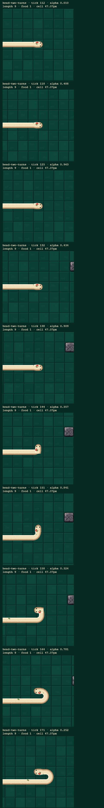
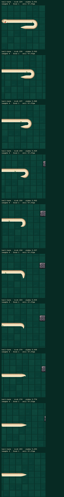
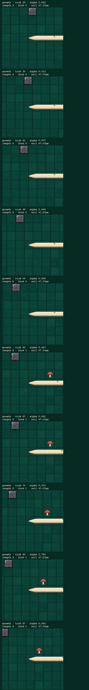
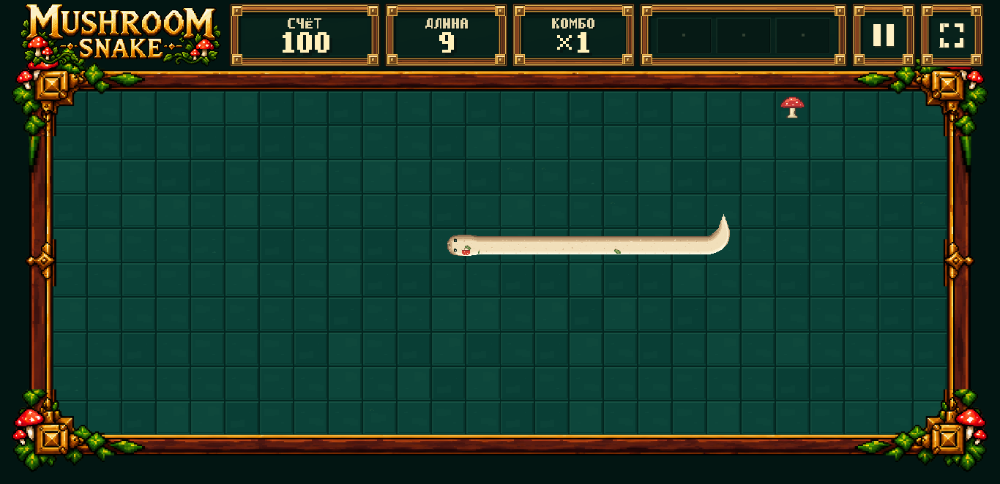
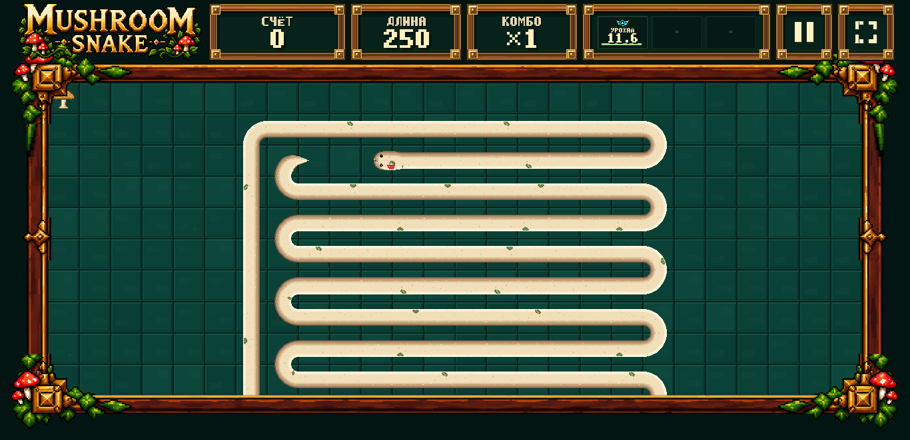
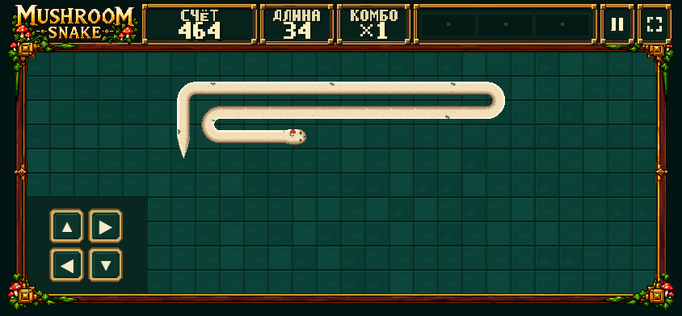
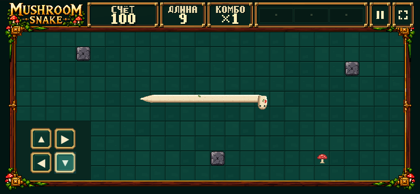
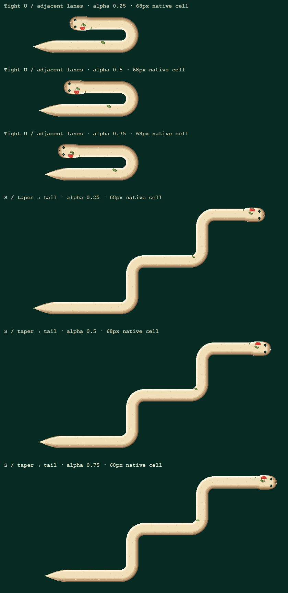

B baseline не изменён. GRID SNAP — известный fallback. Автоматические проверки не означают visual approval или GAME FEEL LOCK. Изображения ниже показаны без shrink-to-fit; для native-scale просмотра используйте горизонтальную прокрутку.
Playable DEV · SMOOTH V2 | GRID SNAP · QA report · Raster results · Live run results
Known caveat: cold 30/250 fixtures triggered one scheduler guard during warm-up. The measured five-minute active window has zero recoveries. This is not a cold-start or hardware FPS certification.
10 consecutive samples at ~100ms intervals. Endpoint-following 7×7-cell crops; native runtime cell 47.07px, no zoom. Actual mushroom growth 8→9, head through two consecutive turns, terminal through the same turns.



68 px cell. .80 → .90 → .95 → 1.00 → next .00 → .05 → .10 → .20. Head + first three cells / last three cells + terminal. At the boundary both frames must have identical RGBA, not merely connected alpha.
| Scene | 974b5ea RGB changes | V2 RGB changes |
|---|
Real fixed timer + RAF; scripted legal inputs. Long-body fixture uses a bounded inspection viewport, not a production arena change.




